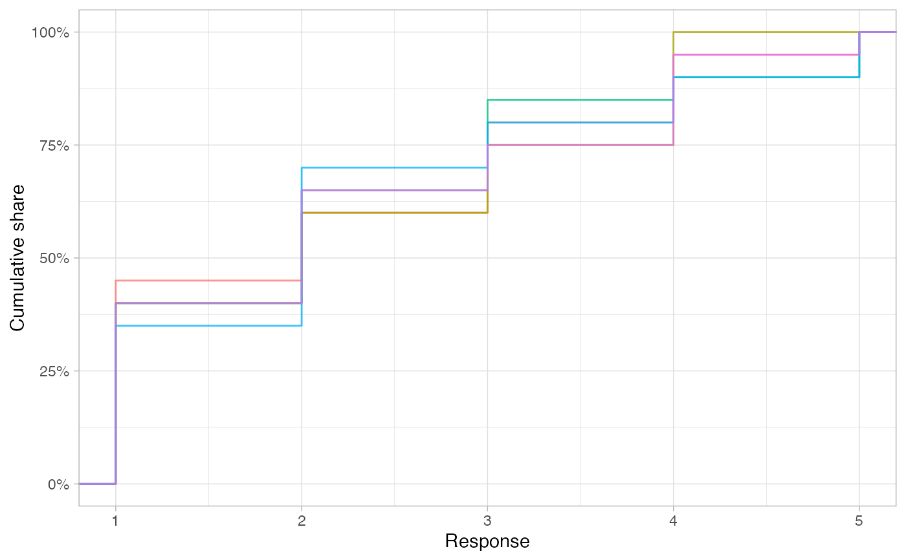
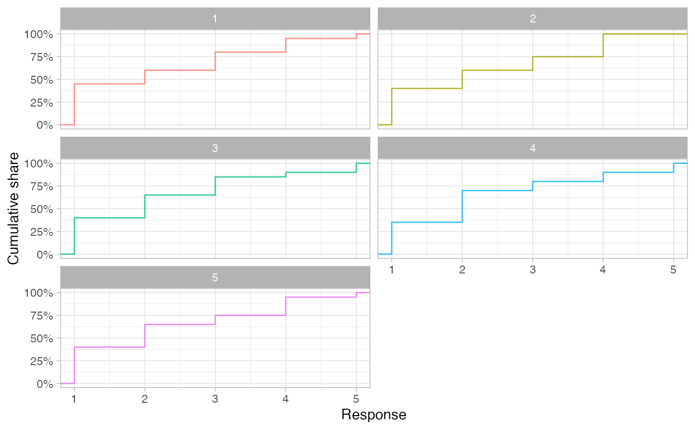

This plots distributions identified by find_possible_distributions using ggplot2.
They can be shown as histograms or as cumulative distributions (ECDF) plots. The latter give
more information, yet not all audiences are familiar with them.
plot_distributions( distributions, plot_type = c("auto", "histogram", "ecdf", "density"), max_plots = 100, show_ids = FALSE, facets = NULL )
| distributions | Tibble with a column |
|---|---|
| plot_type | Plot multiple histograms, or overlapping cumulative distribution plots, or density plots? "auto" is to plot histograms if up to 9 distributions are passed, or if there are fewer than 10 discrete values, and empirical cumulative distribution plots otherwise |
| max_plots | How many distributions should at most be plotted? If more are passed, this number is randomly selected. |
| show_ids | Should ids of the distributions be shown with ecdf and density charts? Defaults to no, since the default ids are not meaningful. |
| facets | Should distributions be shown in one chart or in multiple small charts? Only considered for ecdf and density charts, histograms are always shown in facets |
A ggplot2 object that can be styled with functions such as labs or theme_linedraw
sprite_parameters <- set_parameters(mean = 2.2, sd = 1.3, n_obs = 20, min_val = 1, max_val = 5) poss <- find_possible_distributions(sprite_parameters, 5, seed = 1234) # All distributions in same plot plot_distributions(poss, plot_type = "ecdf")# Separate plot for each distribution plot_distributions(poss, plot_type = "ecdf", facets = TRUE)